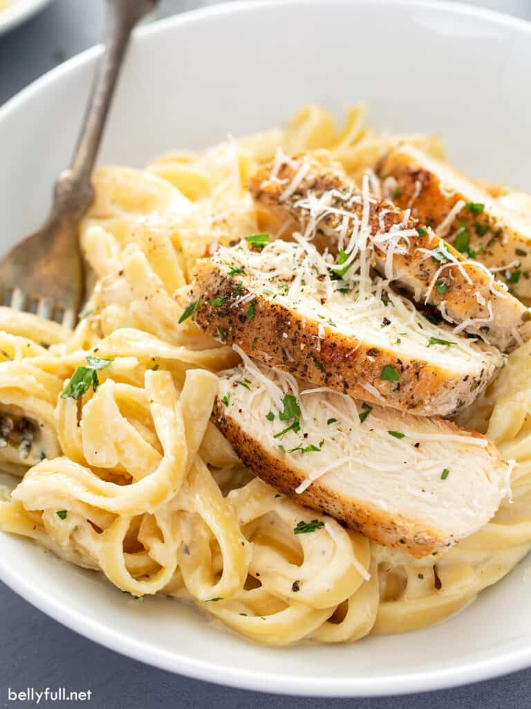

The Best Chicken Alfredo You'll Ever Make

Picture of the completed dish.
Oh, chicken alfredo:
It's the classic pseudo-Italian pasta
we just can't seem to get enough of.
Of course there are tons of jarred
pasta sauces you can buy, but making
alfredo sauce from scratch is actually so easy.
Ingredients:
- 2 tbsp. extra-virgin olive oil
- 2 boneless skinless chicken breasts
- Kosher salt
- Freshly ground black pepper
- 1 1/2 c. whole milk
- 1 1/2 c. low-sodium chicken broth
- 2 cloves garlic, minced
- 8 oz. fetuccini
- 1/2 c. heavy cream
- 1 c. freshly grated Parmesan
- Freshly chopped parsley, for garnish
Steps:
- In a large skillet over medium-high heat, heat oil. Add chicken and season with salt and pepper. Cook until golden and cooked through, 8 minutes per side. Let rest 10 minutes, then slice.
- Add milk, broth, and garlic to skillet. Season with salt and pepper and bring to a simmer. Add fettuccine, stirring frequently for about 3 minutes. Let cook until al dente, 8 minutes more.
- Stir in heavy cream and Parmesan until combined. Simmer until sauce thickens.
- Remove from heat and stir in sliced chicken. Garnish with parsley.